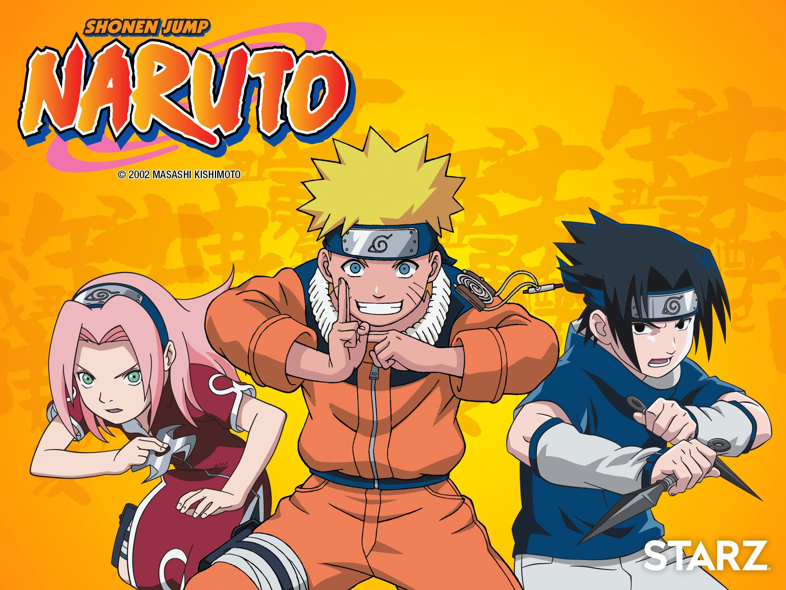

| Original sketch for Naruto in Kishimoto's one-shot, Naruto (1997), which went through several alterations for the manga series due to its amount of detail. During the 1990s, new manga author Masashi Kishimoto sought to write a one-shot chapter that would feature Naruto as a chef, but this version never made it to print. Kishimoto originally wanted to make Naruto a child who could transform into a fox, so he created a one-shot of Naruto for the summer 1997 issue of Akamaru Jump magazine based on the idea.When comparing both the Naruto one-shot and his other work, Karakuri, Kishimoto realized that former's title character was more appealing than the lead of Karakuri. Kishimoto reflects Naruto's "honest" smile was well received in contrast to the sly look the main character from Karakuri had. Following the success of another one-shot, Mario, Kishimoto started working on the Naruto series where he wanted to reuse the title character from his earlier one-shot. Kishimoto wrote the first two chapters to show his appeal to the readers and then focus on the other protagonists despite difficulties. Following the second chapter, Kishimoto introduced the other protagonists but as bad relationships including with Sasuke Uchiha and Naruto's constant reject crushes at Sakura Haruno. The manga story was planned to show Naruto's coming-of-age through multiple fights and looked forward to seeing the conclusion. |
After fans likened Naruto, Sasuke and Sakura to the three main characters from Harry Potter fantasy books, Kishimoto noted that both trios began their careers in a classroom, though he added that the similarity was unintentional. During the series' publication, Kishimoto married and had children. This influenced how he viewed Naruto's character. Naruto met his parents, and learned of their sacrifices in order to help him to control the Fox inside him so that he could protect their world. As a result, Naruto appreciated his life more and learned that his parents loved him, something the author wanted the character to feel based on his own experience as a fatherIn the first chapters of the series, Kishimoto did not conceive the idea that Naruto would be the son of Minato Namikaze. However, as time passed on, the manga author made touches to Minato's face shown in the Hokage Mountain in Konoha to make them more similar to Naruto with an emphasis on their spiky hairs. However, in order to reduce too many similarities, Kushina Uzumaki's character was made to look like Naruto's face.
The first eight chapters of Naruto were planned before it appeared in Weekly Shōnen Jump, and these chapters originally devoted many panels of intricate art to illustrating the Konoha village. By the time Naruto debuted, the background art was sparse, instead emphasizing the characters. Though Kishimoto had concerns that chakra (the energy source used by the ninjas in Naruto) made the series too Japanese, he still believed it is an enjoyable read. Kishimoto is a fan of Godzilla, and the tailed beasts mythology was introduced because Kishimoto wanted an excuse to draw monsters.[8] He has said that the central theme in Part I of Naruto is how people accept each other, citing Naruto's development across the series as an example.
| Naruto as a young adult. Naruto's romantic partner was decided during the early stages of the manga. Since Hinata Hyuga always respected Naruto, even before the series' beginning, even before his academy mentor Iruka Umino, Kishimoto felt they were meant to be. This angered his wife who wanted Naruto to marry Sakura Haruno. When Sakura was introduced, Kishimoto did not think of her as Naruto's future wife, as he saw them as being just friends and teammates, although once Hinata had appeared, the author thought of forming a love triangle between the three characters. He later regretted the love triangle as he considered Naruto a fighting series with little focus on romance, and he reiterated that "it was all about Naruto and Hinata getting married from an early stage. |
Although a real ninja wears blue to be inconspicuous, Kishimoto gave Naruto an orange jumpsuit to fit the shōnen genre. His wardrobe is based on clothing that Kishimoto wore when he was younger. According to him, a pre-existing design would not have made Naruto unique, whereas something original would have made him too distinctive. Because Naruto is associated with spirals in terms of objects he uses, the designer incorporated swirl patterns into the costume. Initial illustrations depicted Naruto in boots, but Kishimoto replaced these with sandals, because he enjoys drawing toes. The goggles Naruto used to wear were replaced with a hitai-ite, or shinobi headband, because they were too time-consuming to draw. One of the most difficult design choices was the color palette of Naruto's outfit. The orange in his costume makes Naruto pop and the blue parts are complementary. Kishimoto apologized to the anime staff for Naruto's design, as he considered it too difficult to animate.

Although a male voice actor was sought for the Japanese adaptation of the Naruto role, the actress Junko Takeuchi was chosen instead over many male applicants. Before recording the first episode, Takeuchi noticed several lines from the script that ended with exclamation marks, which helped her to define Naruto's voice. She noted difficulties in transitioning from the young Naruto to the older Naruto in the animated adaptation of Part II. She had to record the first episode of Part II when Naruto's character was older and more mature only one week after voicing the younger, immature character. Nine years after first voicing the character, while still finding it tough to voice Naruto, Takeuchi's opinion of him changed with her feeling he was "a very reliable young man." She admired his ability to prioritize and calmly make important decisions, and believes these traits will inspire viewers worldwide.

Amy Plumb relates Naruto's development to the mythology of the kitsune.
Introduced as a young orphan boy of 12 years with blond, spiky hair and blue eyes, Naruto Uzumaki graduates as a ninja from Konohagakure while bonding with his teacher Iruka Umino. Naruto seeks attention as he was ridiculed during his childhood. To be accepted and respected, he resolves to become Konohagakure's Hokage and surpass all previous leaders, no matter the difficulties. While becoming a ninja, Naruto forms friendships that he initially lacked, linking some of them to family relationships. Although Naruto sometimes finds himself unable to accomplish the tasks he proposes to do, other characters believe that he will be an excellent Hokage because of his positive impact on their lives.

In Naruto
Part I
Naruto is an orphan who has a dangerous fox-like entity known as Kurama the Nine-Tailed Fox sealed within his body by his father, the Fourth Hokage Minato Namikaze, the leader of Konoha's ninja force, at the cost of his own life and that of his wife, Kushina Uzumaki. This possession led to Naruto being ridiculed frequently by the rest of Konoha; being associated with him was considered taboo. As a youth, Naruto makes jokes and plays pranks to attract attention. Desiring what he lacked in his early life, Naruto dreams of becoming a Hokage himself with the hope that it will bring him the villagers' recognition and respect. In an attempt to become a ninja, Naruto is horrified to learn of his Jinchuriki nature, but finds acceptance from his teacher Iruka Umino, whom he views as a father. After learning the powerful Multi-Shadow Clone Jutsu, an ability to create physical copies of the user, Naruto becomes a ninja. He joins a ninja group under the leadership of Kakashi Hatake where he made friends with Sasuke Uchiha and Sakura Haruno. These are his classmates who are also assigned to Team 7: Sasuke Uchiha, with whom he has had a rivalry since they first met at the ninja academy, and Sakura Haruno who he has a crush on which is not reciprocated by her as she is infatuated with Sasuke.
While being examined to increase his ninja rank, Naruto meets the legendary ninja Jiraiya and learns how to summon toads to aid him in battle, and to control part of the Nine Tails's chakra energy. The exams are interrupted by the invasion of Konohagakure by the criminal Orochimaru and the ninja of Sunagakure. Naruto defeats the sand village's One Tail Jinchuriki Gaara and convinces him there is a better way to live. Shortly afterward, Naruto discovers the Akatsuki, a criminal organization that seeks to extract the Nine-Tails from his body. Though Jiraiya drives them off during this first meeting, learning its member Itachi is both Sasuke's brother, and the man who killed their family, the Akatsuki still plan to kidnap Naruto. While accompanying Jiraiya to find a new village leader, Naruto also learns the Rasengan (螺旋丸, lit. spiral sphere, English manga: "Spiral Chakra Sphere"), a sphere of chakra for offensive purposes. When Sasuke leaves the village to join Orochimaru's forces to obtain the power to kill Itachi, Naruto on his insistence and promise to Sakura becomes part of a rescue team to retrieve him. Naruto and Sasuke ultimately have a one-on-one battle, and after a close battle, Sasuke comes out as the victor. He, however can not bring himself to kill Naruto and instead leaves. The two go their separate ways, but Naruto does not give up on Sasuke, leaving with Jiraiya for two and half years to prepare himself for his next encounter with Sasuke and the Akatsuki.
Part II
After his two and a half years of training, Naruto returns to Konoha (the Leaf Village) and begins to deal more actively with the Akatsuki threat by saving Gaara from their clutches. To fight them, Naruto trains with Kakashi to infuse the Rasengan with his own wind-element chakra, creating the Wind Release: Rasenshuriken (風遁・螺旋手裏剣, Fūton: Rasenshuriken) attack that proves instrumental in the downfall of the Akatsuki member Kakuzu. Despite being targeted by the Akatsuki, Naruto dedicates himself to finding and retrieving Sasuke, who eventually disposes of Orochimaru and starts acting on his vengeance-driven whims. Over time, though resisting the urge to use the creature's power, the Nine Tails's influence over him expands to the point where he begins to lose his rationality as more chakra manifests in the form of tails to the point the Tailed Beast can take control of his body. This ultimately causes him to go on a rampage, destroying everything in his path.
After learning that Jiraiya has been killed by the Akatsuki leader, Pain, Naruto prepares for a future encounter by learning toad-style Senjutsu (仙術, lit. "sage techniques"), a power-enhancing ability involving the gathering of natural energy through stillness, while also perfecting Naruto's Rasenshuriken in the process. When they face off, Naruto is pinned to the ground with iron rods and loses control of the Fox's chakra when his Hinata Hyuga nearly dies protecting him. At that time, Naruto meets his father Minato Namikaze within his subconcious and learns about his status as the Fourth Hokage and him being the one who sealed the Fox so that Naruto could use it to defeat the Akatsuki founder Tobi who was behind the Fox's attack on Konohagakure. With Minato stopping the Fox, Naruto regains control of his body, and defeats Pain. Learning that both are Jiraiya's students, Naruto convinces him to quit Akatsuki, seeking to take Jiraiya's path to create a better ninja world.
Reference
Click here to watch Naruto.Click here to watch naruto-shippuden